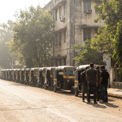

Bike taxis · City
Pune rickshaw unions plan indefinite sit-in outside RTO against bike taxis on 23 November
On 23 November, rickshaw unions in Pune plan to begin an indefinite sit-in outside the Regional Transport Office (RTO) against bike taxis, organised by the Pune District Rickshaw Drivers and Owners Action Committee.
